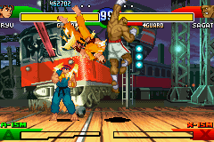
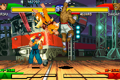

Street Fighter Alpha 3

Not-complete on 2018-05-19
2 / 5
Release Date: Dec 1, 2002
Meta Score: 83
Screenshots
 

Notes
Street Fighter Alpha 3 is a GBA port of this entry in the Street Fighter series. Unlike some other "ports" on the GBA, as far as I can tell this is a pretty faithful port. The Street Fighter sequel naming scheme is very confusing so I'm not sure where exactly this fits in.
As a disclaimer, I'm not a big fighting game fan. I'm fairly bad at them. I know little about Street Fighter apart from the pop culturally well known elements (Ryu, Ken, M.Bison, Hadouken etc.).
The gameplay is, to a layman like me, classic Street Fighter stuff. You have 3 punches and 3 kicks (2 of which are mapped to pressing multiple buttons at the same time due to the GBA's lack of buttons). You can jump, hold back to block (I always find this hard to get on with), and perform special moves by entering cryptic button combos. Quarter circle forward + punch for a hadouken is about all I know.
The game has a lot going on, and doesn't explain much of it in the game. Just to get into a fight you have to pick a character from a large selection, pick a fighting style (I think) which also changes the format of your special meter (not that I knew how to do any special attacks), and a speed. The speed options are "turbo-1" and "turbo-2". Just... what? None of this is explained in game. There's a training mode, but this is just a way to get an NPC fighter to stand so you can practice attacks.
Basically, the game is not noob-friendly at all.
So, I lowered the difficulty (from a choice of 1-8 stars) and fired up "Single mode". I button mashed my way through 9 of the 10 fights, mainly heavy kicking my way to victory. The 10th "final boss" fight against M.Bison proved to be beyond me though. He was massively harder than any opponent up to that point, and seemed to block 90% of my attacks and fire out a devastating special with almost no warning. After trying for about an hour I gave up. I did almost beat him once but mostly I couldn't even get 1 of the 2 round victories required to win the match.
The best part of SFA3 is the graphics. The game looks really nice, and detailed. I'm not sure whether the sprites are just taken from another version of the title or redrawn for the GBA, but either way they look great. Fighters are very detailed with a lot of animations, backgrounds are nice but not too distracting, and there are some nice extra details like Vega's claws falling off onto the floor sometimes.
I'm assuming this is a decent fighting game but it does nothing to help a beginner like me. It seems very inaccessible.